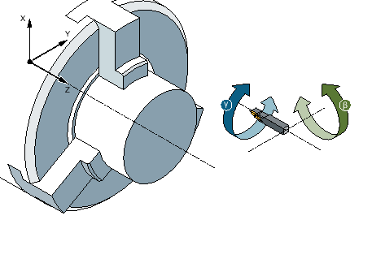
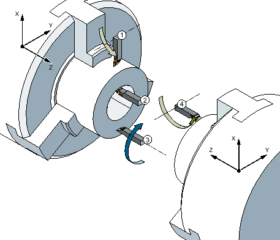

With an additional B axis, you have the option of aligning milling machines and lathes.

① | Main spindle |
② | Tool spindle |
③ | Counterspindle |
The initial setting in which all tools must be measured is B=0.
When turning, you can align the tool for special machining operations using the B axis and C axis of the tool spindle.
When milling, you can swivel the workpiece using the B and C axis of the main or counterspindle so that you can mill and drill on inclined surfaces.
The B axis is also used for aligning tools for face and peripheral surface machining.
Alignment angles β and γ
Alignment angles β and γ are required for turning with tool alignment.
β: Rotation around the Y axis (with the B axis)
γ: Rotation around the Z axis (with the tool spindle)
Turning
Alignment angles allow you to perform a wide range of different turning operations (for example, internal and external longitudinal machining, surface machining with a main spindle and counterspindle, residual material) without changing the tool.
① | Longitudinal machining external |
② | Longitudinal machining internal |
③ | Face cutting main spindle |
④ | Face cutting counterspindle |
Display of the B axis
The B axis is displayed in the following windows:
Axis position display in actual value window
In the "Positioning" window to position axes in manual operation
You can display the B axis in the zero offset lists using the "Zero offset" softkey and you can also define the offset.